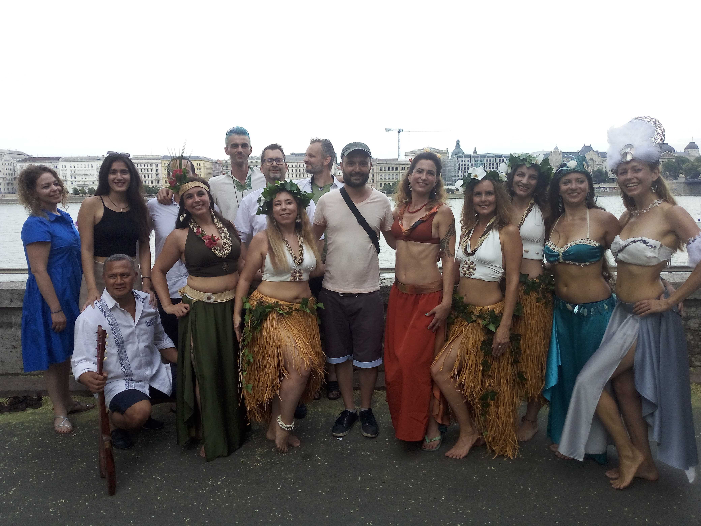

City View
Budapest · Hungary
Budapest has a remarkable skyline, where historic rooftops, grand buildings, church towers, and the curves of the Danube create a memorable urban panorama. From elevated viewpoints, the Hungarian capital reveals how its different districts fit together, with Buda's hills overlooking the broad streets and architecture of Pest. The changing light adds another dimension to the city, bringing out details that are easy to miss while walking at street level. This collection brings together the views that caught my eye and the scenes that made me pause to take a photograph.
My Photo Gallery
A collection of personal photographs capturing Budapest from different perspectives.
View All Photos ↗